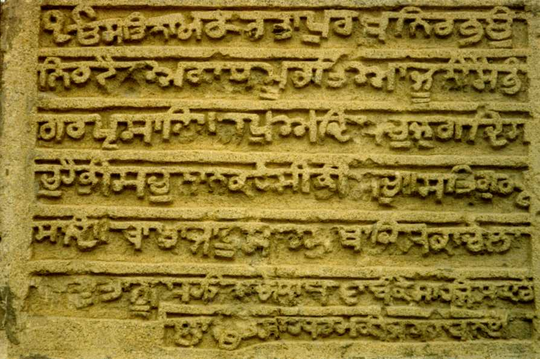

History of India
 Bronze Age[change | change source] Main page: Indus Valley Civilisation The "Priest King" of the Indus Valley Civilisation The Bronze Age in the Indian subcontinent began around 5300 years ago with the early Indus Valley Civilisation, which included cities such as Harappa, Mohenjodaro, Lothal, and Kalibanga. The civilization was based on the Indus River and its tributaries, extending into the Ghaggar-Hakra River valley,[4] the Ganges-Yamuna Doab,[5] Gujarat,[6] and southeastern Afghanistan.[7] In modern times the civilization's old territory is now split between India and Pakistan. More specifically, in Pakistan, the provinces of Sindh, Punjab, and Balochistan overlap with ex-Indus Valley territory. In India, the provinces Gujarat, Haryana, Punjab and Rajasthan also share territory with the Indus Valley Civilization. The first cities on the Indian subcontinent were apart of the Indus Valley Civilisation.[8] IAdditionally, these cities where some of the first urban centers on the plane making the Indus Valley Civilization similar to early Mesopotamian civlizations and Ancient Egypt.[9] Inhabitants of the ancient Indus river valley, the Harappans, developed new techniques in metallurgy and handicraft (carneol products, seal carving), and produced copper, bronze, lead, and tin. The mature Indus civilization flourished from about 4600 to 3900 years ago. It was the start of urban civilisation on the subcontinent. The civilization included urban centers such as Dholavira, Kalibanga, Ropar, Rakhigarhi, and Lothal in modern-day India, and Harappa, Ganeriwala, and Mohenjo-daro in modern-day Pakistan. The civilization is noted for its cities built of brick, roadside drainage system, and multistoried houses. During the later period of this civilisation, signs of a gradual decline began to emerge. By about 3700 years ago, most of the cities were abandoned. However, the Indus Valley Civilisation did not disappear suddenly. Some parts of the Indus Civilization may have survived in the smaller villages and isolated farms. Vedic civilization[change | change source] The Vedas are the oldest teachings of India, though the transmission of these teachings was mainly oral until around the 5th century. There are four Vedas, and the first one is the Rigveda. As per Rigved the whole regions in which the Aryans were first settled in India which was called as the Land of 7 Rivers or SaptaSindhawa .The other three are Samveda, Yajurveda and Atharvaveda. The Vedas have verses in praise of gods and others. They also have other information. At that time, the society was pastoral.
After the Rigveda, society became more agricultural. People became divided into four classes depending on the type of the work. Brahmins were priests and teachers. Kshatriyas were the warriors. Vaishyas did agriculture, trading and commerce. The shudras were the general working class. A common misconception is that the Vaishyas and Shudras were generally looked down upon, and treated badly by Brahmins and Kshatriyas, which was true for the later part of the Vedic age. But was untrue for the earlier part. This type of social division is called the Varna system in Hinduism. During the period of the Vedic civilization, there were many Aryan clans and tribes. Some of them combined and became bigger like the kingdom of the Kurus. Persian and Greek invasion[change | change source] Around the 5th century BC, north-western parts of India faced invasion by the Achaemenid Empire and by the Greeks of Alexander the Great. A Persian way of thinking, administration and lifestyle came to India. This influence became bigger during the Mauryan dynasty. From around 520 BC, the Achaemenid Empire’s Darius I ruled large part of northwestern parts of the Indian subcontinent. Then Alexander conquered these areas. Herodotus, a historian of that time, has written that these areas were the richest areas of Alexander’s Empire. Achaemenid rule lasted about 186 years. In modern times, there are still traces of this Greek heritage to be found in parts of northwestern India. Greco-Buddhism (also spelt as Græco-Buddhism) is a combination of the cultures of Greece and Buddhism. This mixture of cultures continued to develop for 800 years, from the 4th century BC until the 5th century AD. The area where it happened is modern day’s Afghanistan and Pakistan. This mixture of cultures influenced Mahayana Buddhism and spread of Buddhism to China, Korea, Japan and Tibet. The Magadha empire[change | change source] The Magadha formed one of the sixteen kingdoms in ancient India. The core of the kingdom was the area of Bihar south of the Ganges. Its first capital was Rajagriha (modern Rajgir) then Pataliputra (modern Patna). Magadha expanded to include most of Bihar and Bengal,[10] followed by much of eastern Uttar Pradesh and Odhishaa. The ancient kingdom of Magadha is mentioned in Jain and Buddhist texts. It is also mentioned in the Ramayana, Mahabharata, Puranas.[11] A state of Magadha, possibly a tribal kingdom, is recorded in Vedic texts much earlier than 600 BC. Magadha played an important role in the development of Jainism and Buddhism, and two of India's greatest empires, the Maurya Empire and Gupta Empire, originated from Magadha. These empires saw advances in ancient India's science, mathematics, astronomy, religion, and philosophy. This was the Indian "Golden Age". Early middle kingdoms[change | change source] Satavahana empire[change | change source] The Satavahanas came to power from around 230 BC. They are also called Andhras. For about 450 years, many Satavahanas kings ruled most parts of the southern and central India. Western Kshatrapas[change | change source]
For about 350 years, from the years 35-405, Saka kings ruled India. They ruled the western and central parts of India. These areas are in today's states of Gujarat, Maharashtra, Rajasthan, and Madhya Pradesh. There were 27 independent rulers, collectively known as the Kshatrapas. Saka kings ruled India along aside the Kushan kings and the Satvahana kings. Kushan kings ruled the northern parts of India. Satvahana kings ruled the central and some of the southern parts of India. Indo-Scythians[change | change source] Indo-Scythians came to India from Siberia passing through several places like Bactria, Sogdiana, Kashmir and Arachosia. Their coming to India continued from the 2nd century BC to the 1st century BC. They defeated the Indo-Greek rulers of India, and ruled India from Gandhara to Mathura. Gupta dynasty[change | change source] The Gupta dynasty reigned from around 320 to 550 AD. The Gupta Empire covered most of North-central India, the region Gupta Empire (never included Pakistan); and what is now western India and Bangladesh. Gupta society was ordered in accordance with Hindu beliefs. The time of the Gupta Empire is seen as the Golden Age of India. Historians place the Gupta dynasty alongside the Han Dynasty, Tang Dynasty and Roman Empire as a model of a classical civilization. Hun invasion[change | change source] The fighting Huns. By the first half of the fifth century, a group of people known as Huns had settled in Afghanistan. They became powerful. They made Bamiyan as their capital city. They started attacking northwestern parts of India. Skandagupta, an emperor of the Gupta dynasty fought back and kept them away for some years. At last the Huns won and could enter most parts of northern India. With this the Gupta dynasty came to an end. Most of north India became badly affected by this invasion. However, Huns could not go up to the Deccan Plateau and the southern parts of India. These parts remained peaceful. No one knows definitely about the fate of Huns after the end of the sixth century. Some historians believe that they mixed up fully with the Indian people of that time. Late Middle Kingdoms[change | change source] In the history of India, Middle kingdoms of India covers a period beginning from around the 6th-7th century. In South India, Chola kings ruled Tamil Nadu, and Chera kings ruled Kerala. They also had trading relationships with the Roman Empire to the west and Southeast Asia to the east. In north India, Rajputs ruled in many kingdoms. Some of those kingdoms continued for hundreds of years. Harsha's empire[change | change source] After the collapse of the Gupta Empire, it was Harsha of Kanauj (a place now in Uttar Pradesh state of India) who united the northern parts of India in one kingdom. After his death several dynasties tried to control north India and ruled from time to time from 7th century till the 9th century as described in some of the sections below. Some of these dynasties were the Pratiharas of Malwa and later Kannauj; the Palas of Bengal, and the Rashtrakutas of the Deccan. The Pratiharas, Palas, and Rashtrakutas[change | change source] The Pratihara kings ruled kingdoms in Rajasthan and some other parts of northern India from the 6th century to the 11th century. The Palas ruled the eastern part of India. They ruled over areas which are now parts of the Indian states of Bihar, Jharkhand, and the west Bengal, and of Bangladesh. The Palas ruled from 8th century to the 12th century. In the southern parts of India, Rashtrakutas of Malakheda (Karnataka) ruled the Deccan during the 8th-10th centuries after the end of Chalukya rule. All these three dynasties always tried to control the entire north India. During all this time lasting for three to four hundred years, the Chola kings were growing in power and influence. The Rajputs[change | change source] In the 6th century several Rajput kingdoms came into being in Rajasthan. Many other Rajput kings ruled in different parts of north India. Some of these kingdoms continue to survive for hundreds of years during different periods of the history of India. Vijayanagar empire[change | change source] More here.
WHEN BREATH BECOMES AIR From the sound of spacetime to time travel to the microbiome, by way of polar bears, dogs, and trees. BY MARIA POPOVA I have long believed that E.B. White’s abiding wisdom on children’s books — “Anyone who writes down to children is simply wasting his time. You have to write up, not down.” — is equally true of science books. The question of what makes a great book of any kind is, of course, a slippery one, but I recently endeavored to synthesize my intuitive system for assessing science books that write up to the reader in a taxonomy of explanation, elucidation, and enchantment. One of Wittmann’s most pause-giving points has to do with how temporality mediates the mind-body problem. He writes: Presence means becoming aware of a physical and psychic self that is temporally extended. To be self-conscious is to recognize oneself as something that persists through time and is embodied. In a sense, time is a construction of our consciousness. Two generations after Hannah Arendt observed in her brilliant meditation on time that “it is the insertion of man with his limited life span that transforms the continuously flowing stream of sheer change … into time as we know it,” Wittmann writes: Self-consciousness — achieving awareness of one’s own self — emerges on the basis of temporally enduring perception of bodily states that are tied to neural activity in the brain’s insular lobe. The self and time prove to be especially present in boredom. They go missing in the hustle and bustle of everyday life, which results from the acceleration of social processes. Through mindfulness and emotional control, the tempo of life that we experience can be reduced, and we can regain time for ourselves and others. Perception necessarily encompasses the individual who is doing the perceiving. It is I who perceives. This might seem self-evident. Perception of myself, my ego, occurs naturally when I consider myself. I “feel” and think about myself. But who is the subject if I am the object of my own attention? When I observe myself, after all, I become the object of observation. Clearly, this intangibility of the subject as a subject — and not an object — poses a philosophical problem: as soon as I observe myself, I have already become the object of my observation. More here.